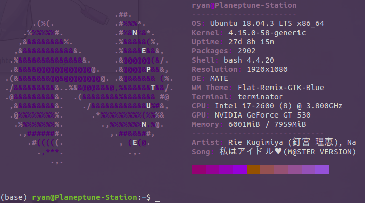

Linux Docs
The below are config files for programs I commonly use. The goal here will
be to collect files here so that, in a pinch, I can get a reinstall up and
running within a few minutes (an hour or so), with minimal struggling.
neofetch

Neofetch config file
Neptune vanity logo